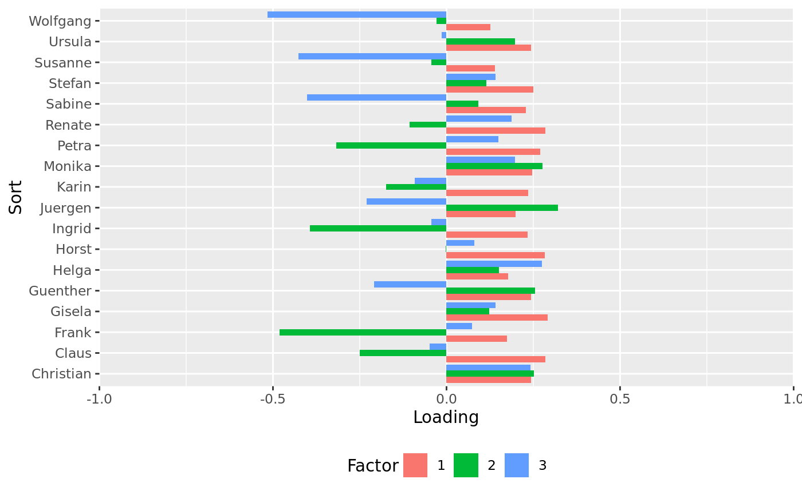
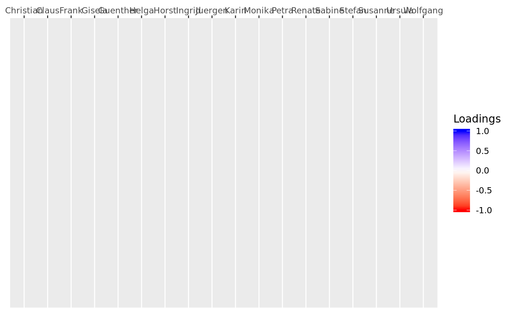

Wraps Principal Components Analysis (PCA) to extract component loadings.
Construct S3 class for pensieve.
Check S3 class.
Plot S3 class.
extract(cors, nfactors, fa_type = "pca") QLoas(loas, validate = TRUE) # S3 method for QLoas check(x) # S3 method for QLoas plot(x, summarize = NULL, by = "people", r2 = FALSE, use_js = NULL, ...)
| cors | A numerical matrix with correlations. |
|---|---|
| nfactors | Positive, non-zero integer scalar, giving the number of components (or factors) to retain.
Must be smaller than the number of observations (here: items) on which |
| fa_type | String giving the type of factor analysis performed.
Currently only |
| loas | A numerical matrix with loadings. |
| validate | a logical flag, indicating whether the object will be validated on construction.
Defaults to |
| x | class object created by respective constructor function. |
| summarize | A logical flag, indicating whether the object should be summarized before plotting.
If Defaults to |
| by | A character string indicating by which dimension to plot.
Must be |
| r2 | Logical flag, indicating whether the squared loadings should be plotted.
If |
| use_js | A logical flag, indicating whether an interactive, java-script variant of the plot should be returned.
Defaults to |
| ... | Arguments passed onto other methods. Not currently used. |
check: validation
plot: plotting
Other analysis functions:
correlate(),
score()
Other S3 classes from pensieve:
correlate(),
psClosedSorts(),
psGrid(),
psItemContent(),
psOpenSorts(),
psOpenSort(),
psPeople(),
score()
Other plotting functions:
correlate(),
psClosedSorts()
# this just runs the calculations, but also classes and validates the results cors <- correlate(csorts = civicon_2014$qData$sorts[,,"before"]) # preliminary step loas <- extract(cors = cors, nfactors = 3, fa_type = "pca") # this just assigns the class, without validation (not recommended) loas <- QLoas(loas = loas, validate = FALSE) # this validates the class check(loas)#> [1] TRUE#> Warning: Removed 54 rows containing missing values (geom_tile).#> Warning: Removed 54 rows containing missing values (geom_text).